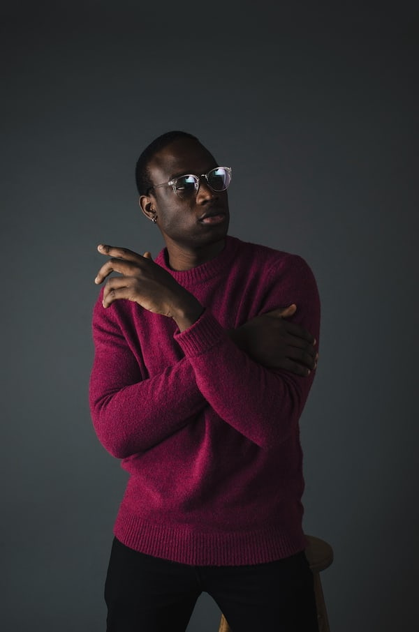

Leadership
Roy Christian Rockatansky is a 22-year-old IT technician who enjoys playing video games, jigsaw puzzles and glamping. He is creative and bright, but can also be very pessimistic and a bit moody. He is an American Christian. He has a degree in computing. He is obsessed with milkshake. He is addicted to video games, something which his friend Dana Kirsten O'Quinn pointed out when he was 17. The problem intensified in 2019.

Lauren Virginia Gobble is a 27-year-old town ex-counsellor who enjoys reading, baking and golf. She is bright and brave, but can also be very sneaky and a bit selfish. She grew up in an upper class neighbourhood. She was raised by her mother, her father having left when she was young. She is American who defines herself as gay. She finished school and then left academia.

Sandie Joshua Gump is a 28-year-old manager who enjoys binge-watching boxed sets, repressing minorities and podcasting. He is stable and creative, but can also be very stable and a bit grumpy. He is American. He finished school and then left academia. He grew up in a working class neighbourhood. He was raised by his mother, his father having left when he was young.
Sales

Zach Rick Blast is a 28-year-old salesperson who enjoys duck herding, meditation and watching YouTube videos. He is considerate and smart, but can also be very evil and a bit boring.
Maud Christiana Sweet is a 23-year-old trainee salesperson who enjoys social card games, painting and recycling. She is kind and generous, but can also be very boring and a bit sneaky. She has been with us for out entire history. She is one of the most loyal employees we've ever had. She is an American Jedi. She has a post-graduate degree in computing. She is obsessed with vintage dresses.

Dick Joshua Rockatansky is a 61-year-old blogger who enjoys eating out, eating and bowling. He is creative and energetic, but can also be very lazy and a bit grumpy. He is addicted to strawberry bonbons, something which a friend pointed out when he was 18. The problem intensified in 1981. Dick has lost five jobs as a result of his addiction, specifically: chef at chain restaurant, tea maker, extra, admin assistant and local activist.
Administration
Rick Gregory MacDonald is a 25-year-old accountant who enjoys tennis, duck herding and escapology. He is creative and energetic, but can also be very lazy and a bit untidy. He grew up in a working class neighbourhood. He was raised by his father, his mother having left when he was young. Rick's best friend is a sports science student called Courtney Coleman. They are inseparable. He also hangs around with Zak Grant and Flynn Hunter. They enjoy podcasting together.

Brad Mohammad Donaldson is a 22-year-old CEO who enjoys eating out, donating blood and swimming. He is exciting and friendly, but can also be very cowardly and a bit untidy. Brad's best friend is a town counsellor called Luther Carr. They have a very firey friendship. He also hangs around with Rae Terry and Ariana Lovell. They enjoy drone photography together. He is British. He started studying philosophy, politics and economics at college but never finished the course.
Tristan Mathias Nolan is a 21-year-old CTO who enjoys tiddlywinks, theatre and spreading fake news on Facebook. He is entertaining and brave, but can also be very rude and a bit untidy. He is currently in a relationship with Sarah Fatima Thomson. Sarah is the same age as him and works as a student. Tristan's best friend is a sports science student called Arlo White. They get on well most of the time. He also hangs around with Sonia Brown and Belle Macdonald. They enjoy binge-watching boxed sets together.
Instructors

Lisa F. Mangeti is a 28-year-old lab assistant who enjoys binge-watching boxed sets, donating blood and theatre. She is smart and considerate, but can also be very rude and a bit impatient. She is currently single. Her most recent romance was with a chef called Precious Leigh Thompson, who was 12 years older than her. They broke up because Precious said Kimberly's ego was too big.

Michael Jacob Roelofsz is a 28-year-old former accountant who enjoys eating, meditation and going to the movies. He is loveable and energetic, but can also be very lazy and a bit grumpy. He grew up in a middle class neighbourhood. His mother left when he was young, leaving him with his father, who was a drunk. He is currently in a relationship with Maci Autumn Bryant. Maci is the same age as him and works as a carpenter.

Michael J. Scarn is a 28-year-old accounting teacher who enjoys travelling, working on cars and badminton. He is loveable and energetic, but can also be very cowardly and a bit impatient. Dick's best friend is a scientific researcher called Posie Adair. They are inseparable. He also hangs around with Cordelia Lovell and Harmonie Emmanuel. They enjoy binge-watching boxed sets together.